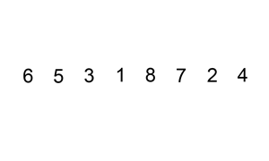
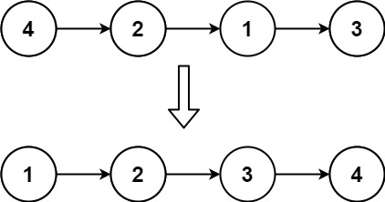
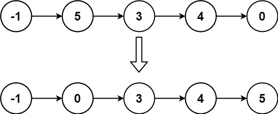

147. 对链表进行插入排序
哨兵 + 插入排序：cur 逐个把结点摘下来，插到已排前缀里第一个比它大的结点前面。
思路
dummy哨兵兜底：插入位置可能在最前面，头结点会变。last是已排前缀的尾，cur = last.next是下一个待插的；cur ≥ last直接前移一格，省掉大部分插入。- 要插时从哨兵往后找最后一个
≤ cur的结点p，重接两根指针：last.next = cur.next、cur.next = p.next、p.next = cur。
图解
最优解
1class Solution {2 public ListNode insertionSortList(ListNode head) {3 // 哨兵：插入位置可能在最前面，头结点会变，全靠 dummy 兜底4 ListNode dummy = new ListNode(0, head);5 // last：已排前缀的尾结点；cur：下一个待插入的结点6 ListNode last = head, cur = head.next;7 while (cur != null) {8 if (cur.val >= last.val) {9 // 不比前缀尾小：已经就位，前缀整体右移一格10 last = cur;11 } else {12 // 从哨兵往后找最后一个 <= cur 的结点 p，插到 p 后面13 ListNode p = dummy;14 while (p.next.val <= cur.val) p = p.next;15 last.next = cur.next; // 先把 cur 从原链上摘下来16 cur.next = p.next;17 p.next = cur;18 }19 cur = last.next;20 }21 return dummy.next;22 }23}题目
给定单个链表的头 head ，使用 插入排序 对链表进行排序，并返回 排序后链表的头 。
插入排序 算法的步骤:
- 插入排序是迭代的，每次只移动一个元素，直到所有元素可以形成一个有序的输出列表。
- 每次迭代中，插入排序只从输入数据中移除一个待排序的元素，找到它在序列中适当的位置，并将其插入。
- 重复直到所有输入数据插入完为止。
下面是插入排序算法的一个图形示例。部分排序的列表(黑色)最初只包含列表中的第一个元素。每次迭代时，从输入数据中删除一个元素(红色)，并就地插入已排序的列表中。
对链表进行插入排序。

示例 1：

输入: head = [4,2,1,3] 输出: [1,2,3,4]
示例 2：

输入: head = [-1,5,3,4,0] 输出: [-1,0,3,4,5]
提示：
- 列表中的节点数在
[1, 5000]范围内 -5000 <= Node.val <= 5000
题面取自力扣当前版本。
数据快照 2026-11-04。题面版权归力扣所有，本站点仅供本人学习使用，请勿对外发布。